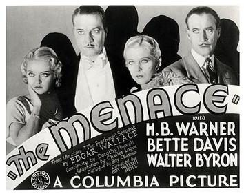
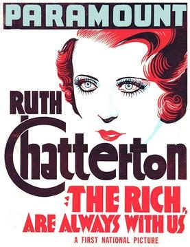
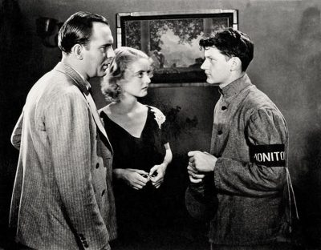

THE STANFORD THEATRE
Now Showing
·
Upcoming
·
Past
·
Search
April 4 - June 6, 2018
Bette Davis Complete early films: 1931 - 1938
18 bills
April 4 - 6
Of Human Bondage (1934)
83 min
Jezebel (1938)
103 min
April 10 - 11
Waterloo Bridge (1931)
81 min
The Bad Sister (1931)
April 12 - 13
The Man Who Played God (1932)
80 min
The Dark Horse (1932)
75 min
April 17 - 18

The Menace (1932)
97 min
Seed (1931)
97 min
April 19 - 20
Cabin in the Cotton (1932)
79 min
20,000 Years in Sing Sing (1932)
78 min
April 24 - 25
So Big (1932)
83 min
Way Back Home (1931)
81 min
April 26 - 27
The Working Man (1933)
78 min
Parachute Jumper (1933)
65 min
May 1 - 2

The Rich Are Always With Us (1932)
71 min

Hell's House (1932)
72 min
May 3 - 4
Jimmy the Gent (1934)
67 min
Three on a Match (1932)
63 min
May 8 - 9
Fashions of 1934 (1934)
78 min
Bureau of Missing Persons (1933)
75 min
May 10 - 11
Fog Over Frisco (1934)
68 min
Ex-Lady (1933)
67 min
May 15 - 16
Front Page Woman (1935)
82 min
Special Agent (1935)
76 min
May 17 - 18
Dangerous (1935)
79 min
Marked Woman (1937)
96 min
May 22 - 23
The Girl from Tenth Avenue (1935)
Housewife (1934)
69 min
May 24 - 25
The Petrified Forest (1936)
79 min
Bordertown (1935)
90 min
May 29 - 30
Kid Galahad (1937)
102 min
The Big Shakedown (1934)
64 min
May 31 - June 1
It's Love I'm After (1937)
90 min
That Certain Woman (1937)
93 min
June 5 - 6
Satan Met a Lady (1936)
75 min
The Golden Arrow (1936)
68 min